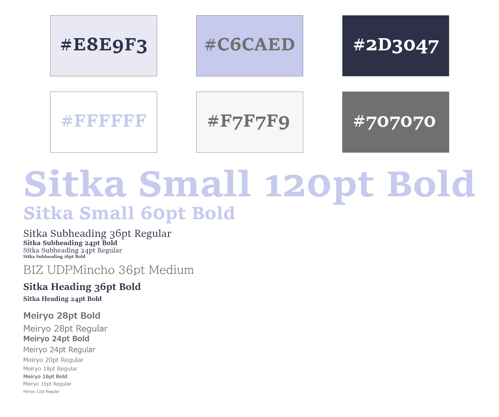

Overview
I am Britney Tu, a student studying UX and UI at Drexel University. This project was to learn about PHP and MySQL. With the class, the content of the site was provided and we only needed to focus on the CSS styling and layout of the page using what we are learning in class. Home Chef is the recipe site I developed in response for the prompt of the class.
Context & Challenge
I am a student studying UX and UI at Drexel University. The purpose of this project was to learn about PHP and MySQL. Using this knowledge, I learned how to write code that can pull information from a database to dynamically build a site. With the class, the content of the site was provided and we were tasked to focus on the styling the site with CSS and layout of the page using a mix of HTML and PHP.
Process & Insight
At the start of the term, the class was provided all the assets needed. With all the information that were given, we were to create a recipe site that is made from PHP and MySQL.
Wireframes


The first step is to create the wireframes for the site. The image above is the inital homepage and recipe layout I designed for the desktop. I wanted to keep the colors bright and subtle as to not distract the user from the content they might be looking for.
Style Guide
The style guide was a reference on what colors I could use and different font sizes that might fit depending on the size of the user's screen. I was unable to find copies of fonts that I could download to use locally. Due to this constraint, I used what was similar to my original as possible while maintaining the overall feel I wanted to encapture.
Code/Dev
With this recipe site, I had to learn how to work with PHP and how to connect my site to the data-base. The syntax took some time to get used to but eventually it worked out after reviewing class content. Using PHP allows the site to pull content from a database to dynamically build a site based what was inputed into the database. Along with this, I optimized all the images that were needed and used for the site and adjust some to fit the dimensions of the other recipes using Adobe Photoshop.

For the filter, I used a microinteraction I customized from existing code. I found this sample code on W3Schools' webite. They have very useful sample code that are simple and straight forward to demonstrate a particular topic. This complex microinteraction has a mix of HTMl, CSS, and jQuery. As mentioned, jQuery was used. I really enjoyed how this microinteraction worked so I researched on my own some basic syntax to customize the reference code to what I orignally wanted to make.
Solution
Home Chef is the recipe site I developed. Users can search and read various different recipes out of approximatly 37 different recipes. The main features include a filter and search option. These use a mixture of javaScript and jQuery. If the user needs help, a help button (indicated by a ? button) can be pressed to gain more info on the functions of the site. No matter what is used both the filter and the search will display the appropriate results that the user has been inputted. As for the color palette, I kept it to be lighter in color. Headers and important functions of the site, I decided to have darker purples and blue to bring more contrast to the white-ish background. This allows less of a distraction to allow users to focus more on the content they are looking at. Below is a video walkthrough of the recipe site going through the main functions of the page and the recipies on desktop.
Results
I believe this project is a success since I was able to implement PHP correctly and styled the site to the way I liked. I learned a lot about server based coding and connecting to a data base to build dynamic layouts. For the future if I were to continue with this project, I would research more with different PHP, jQuery, and javaScript to create a more seemless and engaging recipe site. I might also look into implementing animations to give the site more character.